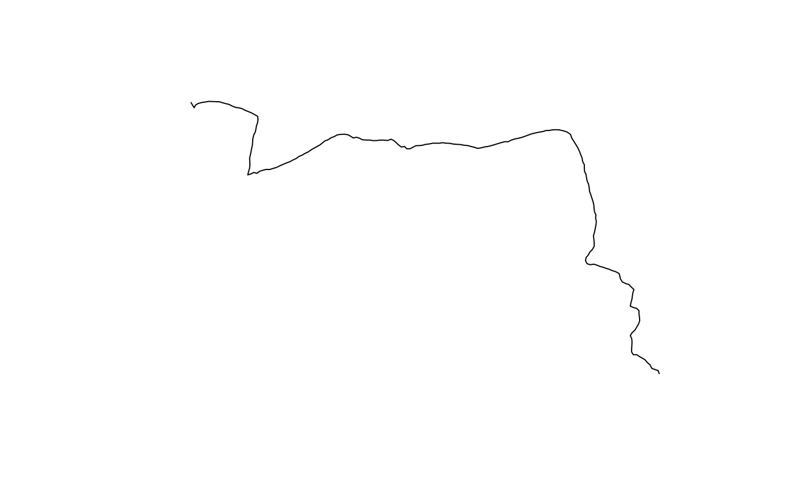
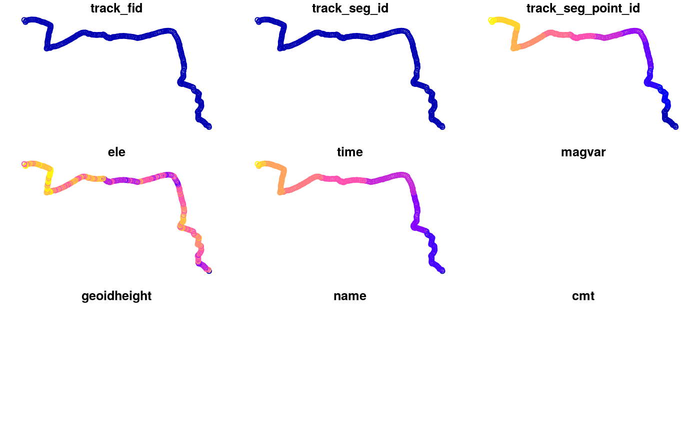
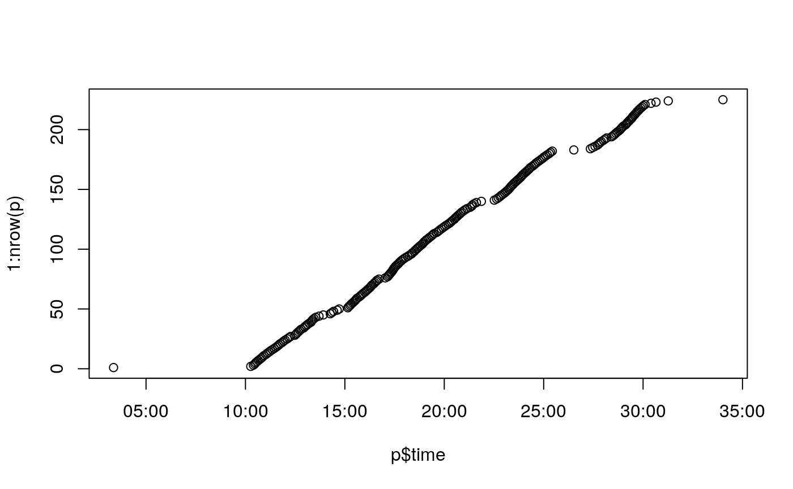
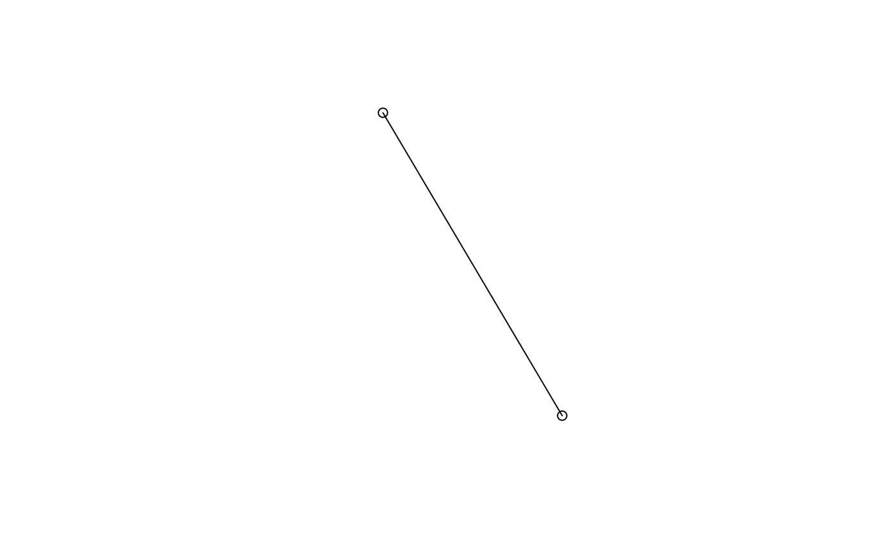
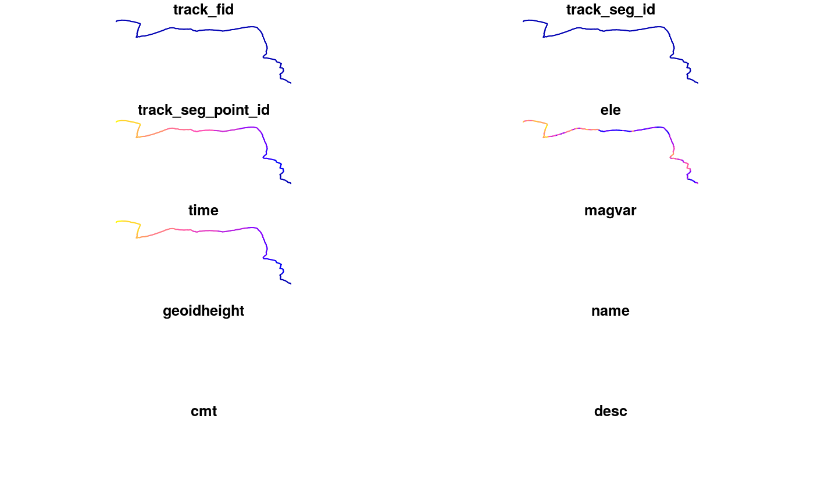

Loading and analysing GPS tracks with R
Robin Lovelace
2019-03-10
Source:vignettes/gps-tracks.Rmd
gps-tracks.RmdIntroduction
Perhaps the most ubiquitous type of geographic information is the continuous stream of data produced by GPS devices. Global Positioning System (GPS) devices are now in everything from watches to cars and, of course, smartphones. This means that GPS datasets have the ability to track a large proportion of the world’s population. Although there are privacy concerns, when appropriately anonymized and aggregated, GPS datasets have the potential to help tackle the issues raised in Chapter 12 of Gecomputation with R: to design healthy transport systems in which walking and cycling overtake cars as the main travel modes.
Loading GPS data
The standard format of GPS data is the .gpx file. GPS traces are vector datasets that are well-support by sf (see Chapter 2 of the book), so we’ll use this package to process them:
library(sf)
#> Linking to GEOS 3.5.1, GDAL 2.1.2, PROJ 4.9.3As with any dataset the first stage is to identify the source. A great source of GPS data is OpenStreetMap (OSM). We’ll use publicly available .gpx files uploaded to OSM as the basis of this tutorial.1 For the purpose of this tutorial we will use a .gpx file uploaded to OSM, that represents travel to the Institute for Geoinformatics, Universität Münster:
u = "https://www.openstreetmap.org/trace/2886173/data"
download.file(url = u, destfile = "trace.gpx")
st_layers("trace.gpx")
#> Driver: GPX
#> Available layers:
#> layer_name geometry_type features fields
#> 1 waypoints Point 0 23
#> 2 routes Line String 0 12
#> 3 tracks Multi Line String 1 13
#> 4 route_points Point 0 25
#> 5 track_points Point 225 26The previous code code chunk downloads the trace from OSM and queries the ‘layers’ that can be imported (note there are 5, but only ‘tracks’ and ‘track_points’ are available). The following code chunk imports and plots the ‘tracks’ layer, which is a MULTILINESTRING geometry in sf, and only 1 row of data:
r = st_read("trace.gpx", layer = "tracks")
#> Reading layer `tracks' from data source `/home/rstudio/data/repos/geocompkg/vignettes/trace.gpx' using driver `GPX'
#> Simple feature collection with 1 feature and 13 fields
#> geometry type: MULTILINESTRING
#> dimension: XY
#> bbox: xmin: 7.595836 ymin: 51.95356 xmax: 7.640715 ymax: 51.96967
#> epsg (SRID): 4326
#> proj4string: +proj=longlat +datum=WGS84 +no_defs
class(r)
#> [1] "sf" "data.frame"
st_geometry_type(r)
#> [1] MULTILINESTRING
#> 18 Levels: GEOMETRY POINT LINESTRING POLYGON ... TRIANGLE
nrow(r)
#> [1] 1
plot(r$geometry)
Other than the geometry, this object has limited information about the route in the fields. The richest field is ‘Description’, which contains the following summary data:
class(r$desc)[1] “factor”
as.character(r$desc)
Start time: 01/07/2019 10:03
Finish time: 01/07/2019 10:34
Distance: 5.1 km (00:30)
Moving time: 00:21
Average speed: 10.08 km/h
Avg. Speed Mov.: 14.07 km/h
Max. speed: 35.06 km/h
Minimum altitude: 32 m
Maximum altitude: 68 m
Ascent speed: 469.6 m/h
Descent speed: -889.1 m/h
Elevation gain: 139 m
Elevation loss: -113 m
Ascent time: 00:17
Descent time: 00:07
"
The data can also be imported as points, as follows:
p = read_sf("trace.gpx", layer = "track_points")
plot(p)
#> Warning: plotting the first 9 out of 26 attributes; use max.plot = 26 to
#> plot all
#> Warning in min(x): no non-missing arguments to min; returning Inf
#> Warning in max(x): no non-missing arguments to max; returning -Inf
#> Warning in min(x): no non-missing arguments to min; returning Inf
#> Warning in max(x): no non-missing arguments to max; returning -Inf
Time series
When did the track take place?
summary(p$time)
#> Min. 1st Qu. Median
#> "2019-01-07 09:03:22" "2019-01-07 09:15:31" "2019-01-07 09:19:29"
#> Mean 3rd Qu. Max.
#> "2019-01-07 09:20:02" "2019-01-07 09:24:24" "2019-01-07 09:34:01"It started from just after 9:00 in the morning and ended just after 09:30. Let’s check if they happened at regular intervals:

And the temporal resolution:
difftime(p$time[11], p$time[10])
#> Time difference of 4 secsConverting points to lines
The plot of points is useful, but it would be better to have a line representation that contains the rich point-level data. This can be done by converting the points to lines, as follows for the the first 2 points:
c = st_coordinates(p)
l1 = sf::st_linestring(c[1:2, ])
plot(l1)
lsf = st_sf(st_set_geometry(p[2, ], NULL), st_sfc(l1))
plot(p$geometry[1:2], add = T)
For all points we can do:
points2line_trajectory = function(p) {
c = st_coordinates(p)
i = seq(nrow(p) - 2)
l = purrr::map(i, ~ sf::st_linestring(c[.x:(.x + 1), ]))
s = purrr::map_dbl(i, function(x) {
geosphere::distHaversine(c[x, ], c[(x + 1), ]) /
as.numeric(p$time[x + 1] - p$time[x])
}
)
lfc = sf::st_sfc(l)
a = seq(length(lfc)) + 1 # sequence to subset
p_data = cbind(sf::st_set_geometry(p[a, ], NULL), s)
sf::st_sf(p_data, geometry = lfc)
}Let’s test it out:
l = points2line_trajectory(p)
plot(l)
#> Warning: plotting the first 10 out of 27 attributes; use max.plot = 27 to
#> plot all
#> Warning in min(x): no non-missing arguments to min; returning Inf
#> Warning in max(x): no non-missing arguments to max; returning -Inf
#> Warning in min(x): no non-missing arguments to min; returning Inf
#> Warning in max(x): no non-missing arguments to max; returning -Inf
We now have lots more variables to play with and, unlike with the point dataset, the look good (and like traces) when plotted. Note that in the previous function definition we calculated speed. Plot the resulting ‘speed profile trace’ as follows:
plot(l["s"], lwd = l$s)
Further resources
- Content on trajectories by Edzer Pebesma: http://edzer.github.io/astd/lec8.html
- The trajectories package: https://cran.r-project.org/package=trajectories
- The trajr package: https://cran.rstudio.com/web/packages/trajr/vignettes/trajr-vignette.html
- The trackeR package: https://github.com/trackerproject/trackeR
- The SpatioTemporal taskview: https://cran.r-project.org/web/views/SpatioTemporal.html